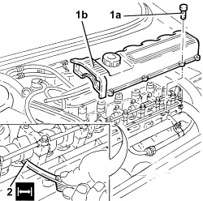

1036H14 VALVE TAPPETS - CHECK CLEARANCE
- Path
- Procedures > 10 ENGINE > 1036 TIMING SYSTEM > 1036H TAPPETS AND ROCKER SHAFTS > 1036H14 VALVE TAPPETS - CHECK CLEARANCE
- Kind
- repair procedure (removal / refitting; the operation number is the code)
- Applies to
- engines: 1.8, 1.9 JTD 8v; all production periods
- Interactive page
- https://sloeber94.github.io/elrnDB-fCrm/en/#/194002155
Applies to: engines: 1.9 JTD 8v; all production periods
Op. 1016A10 SOUND-PROOFING COVER - R.R
1. Undo the bolts (1a) and remove the cam cover (1b) complete with gasket.
2. Using a feeler gauge, measure the clearance between the camshaft and a tappet shim.
Measurement | Value | Validity | ||
|---|---|---|---|---|
Inlet valves clearance in closed position | 0.25 - 0.35 mm | 1.9 JTD 8v | ||
Measurement | Value | Validity | ||
|---|---|---|---|---|
Exhaust valves clearance in closed position | 0.30 - 0.40 mm | 1.9 JTD 8v | ||

Applies to: engines: 1.9 JTD 8v; all production periods
- Place the tappet cover complete with gasket back in its housing and secure it by tightening the bolts to the recommended torque.
Component | Fastening | dia | Value (daNm) | Validity |
|---|---|---|---|---|
Tappet cover | Bolt | M6 | (cylinder head side) 0.8 - 1.0 | 1.9 JTD 8v |
Applies to: engines: 1.8; all production periods
- Refer to
Op. 1036H10 VALVE TAPPETS - CHECK AND ADJUST CLEARANCE, IF NECESSARY